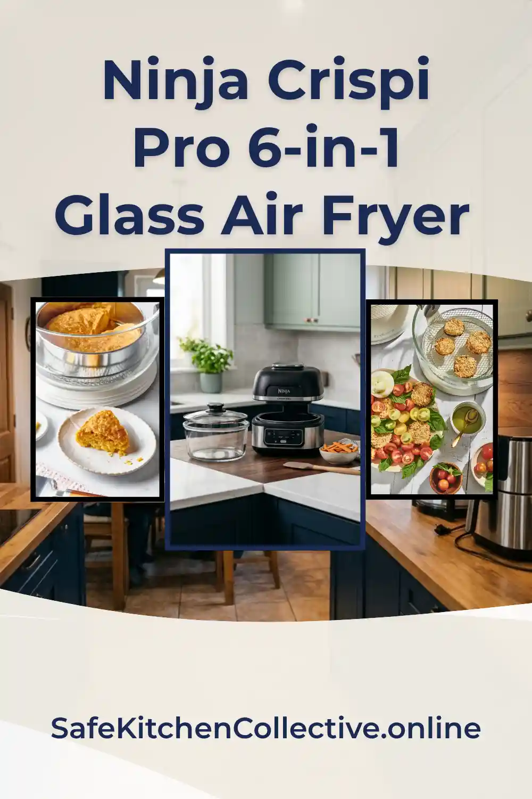

Ninja Crispi Pro 6-in-1 Glass Air Fryer Review
The most versatile modular glass air fryer on the market. Cook, store, and reheat with 1800W of non-toxic power at 450°F.
As an Amazon Associate we may earn a commission from qualifying purchases - at no extra cost to you.

The Ninja Crispi Pro's modular glass system - cook, store, and reheat in the same container
Quick Verdict
The Ninja Crispi Pro (AS101CY) is a massive leap forward for modular kitchen systems. Unlike single-bowl units, it offers interchangeable 6-qt and 2.5-qt glassware that transitions from freezer to air fryer base to fridge. It is the gold standard for high-heat (450°F) non-toxic cooking.
- Safety Score: 98/100
- Max Heat: 450°F
- Capacity: Up to 7.5-lb Chicken
- Functions: 6-in-1
Fritaire vs. Ninja Crispi Pro: Which is Right for You?
| Feature | Fritaire Glass Pro | Ninja Crispi Pro |
|---|---|---|
| Primary Material | Tempered Glass & Stainless Steel | CleanCrisp Thermal Shock Glass |
| Max Temperature | 400°F (Vortex Heat) | 450°F (Max Crisp) |
| Unique Feature | Self-Cleaning Mode | Modular "Cook & Store" System |
| Capacity | 5-Quart (Single Bowl) | 6-Quart + 2.5-Quart (Interchangeable) |
| Best For... | Easy Cleanup & Rotisserie Lovers | Family Meal Prep & High-Heat Searing |
| Toxic Coatings? | None (100% Teflon/BPA Free) | None (100% Teflon/BPA Free) |
Material & Construction Analysis
CleanCrisp Glassware
The core of this system is the borosilicate-style glass containers. They are thermally shock resistant, meaning they handle extreme temperature swings without structural failure. This removes the need for PFAS/PTFE "non-stick" coatings entirely.
Fixed Heat Protection
Unlike other glass fryers, Ninja integrated permanently fixed heat-safe feet. This allows the hot glass to be placed directly on quartz, marble, or laminate surfaces immediately after cooking without damaging the countertop.
Modular 1800W Base
The high-wattage base is built with precision sensors to recognize container size. The heating element is housed away from food contact, ensuring the purity of your meal's flavor and safety profile.
Material Summary
- Thermal Shock Resistant Glass
- 100% Coating-Free
- BPA-Free & PFAS-Free
- Dishwasher Safe Glassware
- Leakproof Storage Lids
Cooking Performance
Performance is where the Ninja Crispi Pro beats the competition. Most glass fryers struggle to reach high heat; this unit hits 450°F via the Max Crisp setting. This delivers a sear and crunch that is often missing from standard convection glass models.
The 6-qt capacity is genuinely "family-sized," comfortably feeding up to 10 people or roasting a heavy 7.5-lb whole chicken. For smaller appetizers, the 2.5-qt container provides faster, more efficient air frying.
The six cooking functions (Max Crisp, Air Fry, Bake/Proof, Roast, Recrisp, Dehydrate) cover virtually every home cooking need. The Recrisp function is particularly useful for reviving leftovers to their original crispy texture.
The modular design means you can prep meals in advance, store them in the fridge with the leakproof lids, and cook directly from refrigerator or freezer without transferring to another container.
Pros & Cons
Pros
- True modularity (Multi-size glassware)
- Leakproof storage lids included
- Highest heat output in its class (450°F)
- Zero toxic synthetic coatings
- Freezer-to-Countertop functionality
- Dishwasher safe glassware
Cons
- Heavy glass components require grip strength
- Larger footprint for storing multiple bowls
- Base must be stored separately from glass
- Premium price point
- Learning curve for modular system
Should You Buy the Ninja Crispi Pro?
If you want a single appliance that replaces your air fryer, storage containers, and baking dishes while guaranteeing a toxic-free environment, the Ninja Crispi Pro is the premier choice for 2026.